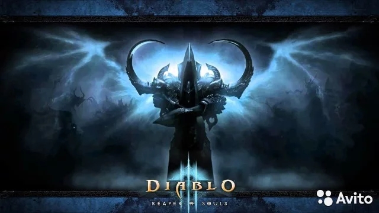
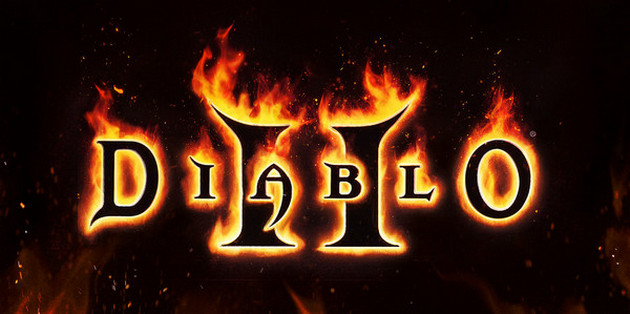

Diablo
Diablo III
Diablo III — компьютерная игра в жанре Action/RPG, разработанная и выпущенная
американской компанией Blizzard Entertainment, для платформ Microsoft Windows, Mac OS X[6], PlayStation 3,
PlayStation 4, Xbox 360, Xbox One и Switch. Игра является частью серии игр Diablo и прямым продолжением
iablo II. Она стала второй игрой из серии Diablo, выпущенной также и на игровых приставках. Действие игры,
как и в предыдущих частях серии, происходит в мире Санктуарий, выполненном в духе тёмного фэнтези; игрок,
управляя персонажем одного из нескольких классов на выбор, должен уничтожать угрожающих Санктуарию демонов
и чудовищ и в итоге сразиться с Диабло, Владыкой Ужаса.
Diablo III, выпущенная после многих лет разработки и впервые анонсированная в 2008 году,
получила крайне высокие оценки обозревателей, высоко оценивших геймплей игры; нарекания
вызвало требование постоянного подключения к серверам игры даже в однопользовательском режиме.
После выхода игры предметом для критики также стал «аукцион», позволявший игрокам торговать
найденными в игре предметами за виртуальную валюту и покупать их за реальные деньги; в 2014
году эта функция была исключена из игры. В том же 2014 году для игры было выпущено дополнение
Reaper of Souls, распространявшеся вместе с основной игрой как Diablo III: Ultimate Evil Edition,
а в 2017 — Rise of the Necromancer, добавляющее в игру ещё один класс — некроманта.
Diablo III приобрела огромный коммерческий успех: лишь в течение первых суток после начала продаж
игры было продано 3,3 миллиона копий и в 2015 году число проданных копий превысило 30 миллионов.
Diablo II
Подробнее о Diablo II
Diablo II — компьютерная ролевая игра в жанре hack and slash action/RPG, разработанная американской
компанией Blizzard North и выпущенная Blizzard Entertainment для Windows и Mac OS в 2000 году. Это
вторая часть серии Diablo, продолжающая события игры Diablo (1996). В соответствии с сюжетом игры,
выполненной в духе тёмного фэнтези, вымышленный мир Санктуарий подвергается нашествию демонов,
которым противостоит управляемый игроком персонаж. Как и предыдущая игра серии, Diablo II содержит
упрощенный по сравнению с компьютерными ролевыми играми, но увлекательный геймплей, предлагая игроку
уничтожать толпы противников и вознаграждая его приростом характеристик и предметами экипировки
для персонажа.
Diablo II получила очень высокие оценки игровой прессы и стала одной из наиболее продаваемых игр 2000
года: за первый год после выхода было продано 4 миллиона копий игры, из них миллион — в течение двух
недель после выхода. В 2001 году было выпущено дополнение под названием Diablo II: Lord of Destruction,
добавляющее в игру новые классы персонажей, предметы и уровни. Игра сохраняла свою популярность и
в последующие годы, в том числе благодаря многопользовательской составляющей, позволяющей нескольким
игрокам играть в кооперативном режиме.[4] Она также стала образцом для подражания для многих последующих
игр в том же жанре, в том числе Nox, Dungeon Siege или Divine Divinity.
Diablo
Подробнее о Diablo

Diablo — компьютерная игра в жанре Action/RPG, разработанная американской студией Blizzard North и выпущенная Blizzard Entertainment для Microsoft Windows в 1996 году. В 1997 году вышло не каноничное (неофициальное) дополнение под названием Diablo: Hellfire, разработанное компанией Sierra Entertainment. В 1998 году была выпущена версия игры для игровой приставки PlayStation, разработанная Climax Studios и изданная компанией Electronic Arts.